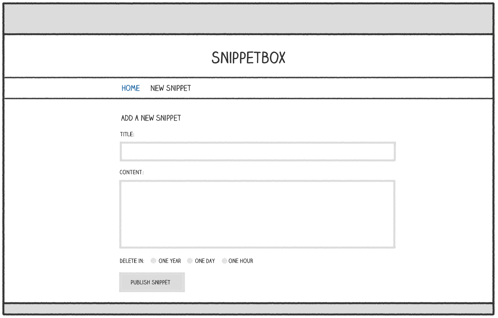

Chapter 7.
Processing forms
In this section of the book we’re going to focus on adding an HTML form for creating new snippets. The form will look a bit like this:

The high-level flow for processing this form will follow a standard Post-Redirect-Get pattern and will work like so:
- The user is shown the blank form when they make a
GETrequest to/snippet/create. - The user completes the form and it’s submitted to the server via a
POSTrequest to/snippet/create. - The form data will be validated by our
snippetCreatePosthandler. If there are any validation failures the form will be re-displayed with the appropriate form fields highlighted. If it passes our validation checks, the data for the new snippet will be added to the database and then we’ll redirect the user toGET /snippet/view/{id}.
As part of this you’ll learn:
- How to parse and access form data sent in a
POSTrequest. - Some techniques for performing common validation checks on the form data.
- A user-friendly pattern for alerting the user to validation failures and re-populating form fields with previously submitted data.
- How to keep your handlers clean by using helpers for form processing and validation.